Library › Topics › Startups & Business
Everything on startups and business
Every business book in the vault - starting from zero, finding customers, pricing, hiring, and surviving your own success: 118 free summaries.
118 BOOKS · ALL FREE · AUDIO IN 26 LANGUAGES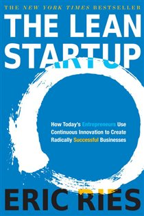
The Lean StartupEric Ries · 2011A startup's only job is learning what customers actually want - faster than the money runs out.8 min · 6 lessons · free summary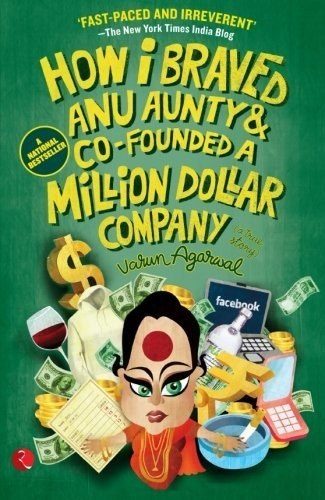
How I Braved Anu Aunty and Co-Founded a Million Dollar CompanyVarun Agarwal · 2012Alma Mater's founding story is a comedy of Indian expectation versus founder instinct, and a real lesson in di9 min · 8 lessons · free summary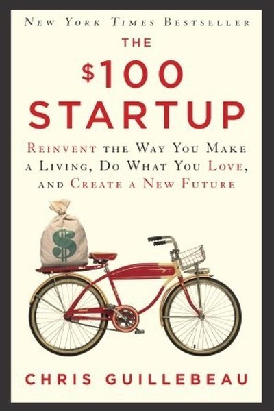
The $100 StartupChris Guillebeau · 2012You don't need funding, permission or a perfect plan - you need a skill, a customer, and the nerve to start to8 min · 6 lessons · free summary The High-Performance EntrepreneurSubroto Bagchi · 2006A field manual for founders who refuse to flip: the disciplines of building a durable, values-driven company f12 min · 8 lessons · free summary
The High-Performance EntrepreneurSubroto Bagchi · 2006A field manual for founders who refuse to flip: the disciplines of building a durable, values-driven company f12 min · 8 lessons · free summary Big Billion Startup: The Untold Flipkart StoryMihir Dalal · 2019Flipkart's story is India's startup origin myth: scrappy founders, cash-burning wars, and a $22B exit that end14 min · 8 lessons · free summary
Big Billion Startup: The Untold Flipkart StoryMihir Dalal · 2019Flipkart's story is India's startup origin myth: scrappy founders, cash-burning wars, and a $22B exit that end14 min · 8 lessons · free summary Business MaharajasGita Piramal · 1996Gita Piramal profiles the titans who built Indian industry - their audacity, detail-obsession and self-belief 8 min · 6 lessons · free summary
Business MaharajasGita Piramal · 1996Gita Piramal profiles the titans who built Indian industry - their audacity, detail-obsession and self-belief 8 min · 6 lessons · free summary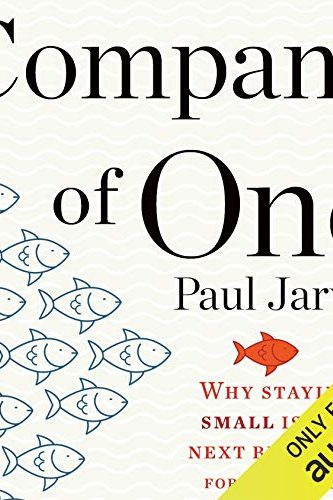
Company of OnePaul Jarvis · 2019Growth is not a strategy; it's a religion most businesses die converting to. Build a company that stays small 8 min · 6 lessons · free summary Connect the DotsRashmi Bansal · 2010Rashmi Bansal tells the stories of 20 entrepreneurs without elite degrees who built big businesses on hustle, 8 min · 6 lessons · free summary
Connect the DotsRashmi Bansal · 2010Rashmi Bansal tells the stories of 20 entrepreneurs without elite degrees who built big businesses on hustle, 8 min · 6 lessons · free summary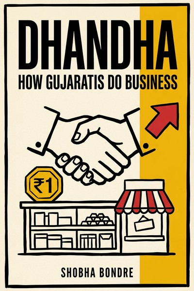
Dhandha: How Gujaratis Do BusinessShobha Bondre · 2013Real stories of Gujarati entrepreneurs (snack kings, motel empires, diamond traders) and the operating system 10 min · 8 lessons · free summary Doglapan: The Unfiltered Truth About Startups and LifeAshneer Grover · 2022Ashneer Grover's brutally honest memoir of building BharatPe - valuation vs cash, investors vs founders, and t8 min · 6 lessons · free summary
Doglapan: The Unfiltered Truth About Startups and LifeAshneer Grover · 2022Ashneer Grover's brutally honest memoir of building BharatPe - valuation vs cash, investors vs founders, and t8 min · 6 lessons · free summary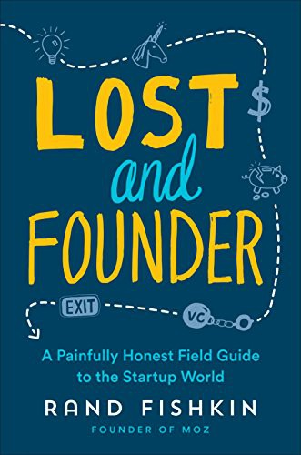
Lost and Founder: A Painfully Honest Field Guide to the Startup WorldRand Fishkin · 2018Rand Fishkin's painfully honest account of building Moz: founder depression, VC misalignment, the 'pretend gro11 min · 8 lessons · free summaryRecasting India: How Entrepreneurship Is Changing the World's Largest DemocracyHindol Sengupta · 2014A reporter's tour of India's entrepreneurial turnaround: from license-raj scars to startup energy, told throug11 min · 8 lessons · free summary Business Sutra: Lessons from Indian MythologyDevdutt Pattanaik · 2013Devdutt Pattanaik reads Indian mythology as a manual for the workplace - where identity and belief ('bhava') a8 min · 6 lessons · free summary
Business Sutra: Lessons from Indian MythologyDevdutt Pattanaik · 2013Devdutt Pattanaik reads Indian mythology as a manual for the workplace - where identity and belief ('bhava') a8 min · 6 lessons · free summary Crushing It!Gary Vaynerchuk · 2018Document, don't create. Pick your pillar platform, pound out value daily, and let patience plus passion beat t8 min · 6 lessons · free summary
Crushing It!Gary Vaynerchuk · 2018Document, don't create. Pick your pillar platform, pound out value daily, and let patience plus passion beat t8 min · 6 lessons · free summary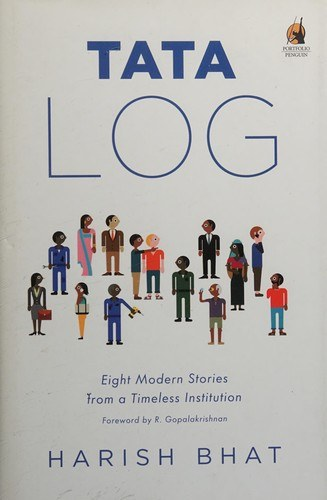
Tata Log: Eight Modern Fables from Indian BusinessHarish Bhat · 2013A Tatabrand insider retells eight decisive stories (Tanishq, Taj, Docomo, Jaago Re, Westside, Croma and more) 10 min · 7 lessons · free summary The Maruti Story: How a Public Sector Company Put India on WheelsR. C. Bhargava · 2010Maruti 800 proved Indian manufacturing could be world class, but only after a public-sector dream was rescued 13 min · 8 lessons · free summary
The Maruti Story: How a Public Sector Company Put India on WheelsR. C. Bhargava · 2010Maruti 800 proved Indian manufacturing could be world class, but only after a public-sector dream was rescued 13 min · 8 lessons · free summary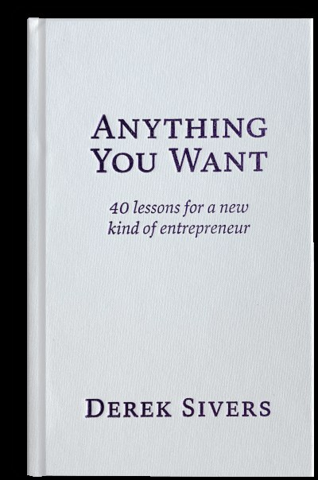
Anything You WantDerek Sivers · 2011Business is not about money; it's a way to make your ideas happen and improve lives. If it's not a hell yeah, 8 min · 6 lessons · free summary Arise, AwakeRashmi Bansal · 2012Ten stories of Indian student entrepreneurs who built real companies while still in college, with the honest w10 min · 8 lessons · free summaryBad BloodJohn Carreyrou · 2018A $9 billion company built on a machine that didn't work - and the culture of fear, NDAs, and famous names tha8 min · 6 lessons · free summary
Arise, AwakeRashmi Bansal · 2012Ten stories of Indian student entrepreneurs who built real companies while still in college, with the honest w10 min · 8 lessons · free summaryBad BloodJohn Carreyrou · 2018A $9 billion company built on a machine that didn't work - and the culture of fear, NDAs, and famous names tha8 min · 6 lessons · free summary Delivering Happiness: A Path to Profits, Passion, and PurposeTony Hsieh · 2010Tony Hsieh's story of Zappos: from worm farming and LinkExchange to selling shoes online with a culture so str11 min · 8 lessons · free summaryDream With Your Eyes OpenRonnie Screwvala · 2020Ronnie Screwvala's entrepreneurial memoir: how a film-printing business failed, how UTV rose from the lesson, 8 min · 6 lessons · free summaryFollow Every RainbowRashmi Bansal · 2013Real stories of Indian women entrepreneurs across kitchens, classrooms and boardrooms, showing how they turned10 min · 8 lessons · free summary
Delivering Happiness: A Path to Profits, Passion, and PurposeTony Hsieh · 2010Tony Hsieh's story of Zappos: from worm farming and LinkExchange to selling shoes online with a culture so str11 min · 8 lessons · free summaryDream With Your Eyes OpenRonnie Screwvala · 2020Ronnie Screwvala's entrepreneurial memoir: how a film-printing business failed, how UTV rose from the lesson, 8 min · 6 lessons · free summaryFollow Every RainbowRashmi Bansal · 2013Real stories of Indian women entrepreneurs across kitchens, classrooms and boardrooms, showing how they turned10 min · 8 lessons · free summary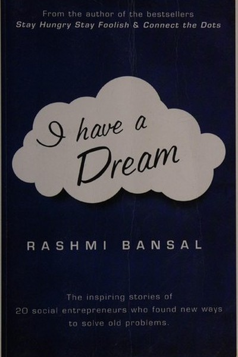
I Have a DreamRashmi Bansal · 2011Rashmi Bansal profiles Indians who built businesses that change lives - proving mission and margin can coexist8 min · 6 lessons · free summary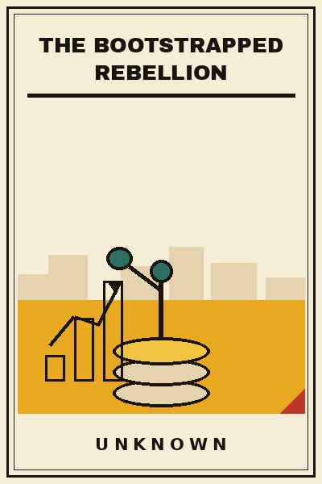
The Bootstrapped RebellionUnknown · 2026Venture capital is one fuel. This book is about the other one: customers, cash flow and compounding, the boots10 min · 10 lessons · free summary The Elephant Catchers: Key Lessons for Breakthrough GrowthSubroto Bagchi · 2013Bagchi, who scaled MindTree from nothing to a billion-dollar company, maps the leaps a startup must make in sa11 min · 8 lessons · free summary
The Elephant Catchers: Key Lessons for Breakthrough GrowthSubroto Bagchi · 2013Bagchi, who scaled MindTree from nothing to a billion-dollar company, maps the leaps a startup must make in sa11 min · 8 lessons · free summary The Last Mile LieUnknown · 2026Every failed delivery startup died of the same arithmetic: the last mile is where the money goes to die: and t10 min · 10 lessons · free summary
The Last Mile LieUnknown · 2026Every failed delivery startup died of the same arithmetic: the last mile is where the money goes to die: and t10 min · 10 lessons · free summary The Mom TestRob Fitzpatrick · 2013Never ask if your idea is good - even your mom will lie. Ask about their life, their past, their problems: fac8 min · 6 lessons · free summary
The Mom TestRob Fitzpatrick · 2013Never ask if your idea is good - even your mom will lie. Ask about their life, their past, their problems: fac8 min · 6 lessons · free summary $100M Money ModelsAlex Hormozi · 2025Get every customer to pay for the next one. If gross profit in 30 days covers acquisition cost, growth becomes9 min · 7 lessons · free summaryA Better India, A Better WorldN. R. Narayana Murthy · 2009Narayana Murthy distills the lessons behind Infosys into a vision for India: compassionate capitalism, meritoc9 min · 7 lessons · free summary
$100M Money ModelsAlex Hormozi · 2025Get every customer to pay for the next one. If gross profit in 30 days covers acquisition cost, growth becomes9 min · 7 lessons · free summaryA Better India, A Better WorldN. R. Narayana Murthy · 2009Narayana Murthy distills the lessons behind Infosys into a vision for India: compassionate capitalism, meritoc9 min · 7 lessons · free summary Amazon Unbound: Jeff Bezos and the Invention of a Global EmpireBrad Stone · 2021Stone's inside account of Amazon's second decade, showing how a company that nearly bungled its flagship phone12 min · 8 lessons · free summary
Amazon Unbound: Jeff Bezos and the Invention of a Global EmpireBrad Stone · 2021Stone's inside account of Amazon's second decade, showing how a company that nearly bungled its flagship phone12 min · 8 lessons · free summary Build, Don't TalkRaj Shamani · 2022Everyone's talking. Almost nobody's building. The gap between those two words is your entire career.9 min · 7 lessons · free summary
Build, Don't TalkRaj Shamani · 2022Everyone's talking. Almost nobody's building. The gap between those two words is your entire career.9 min · 7 lessons · free summary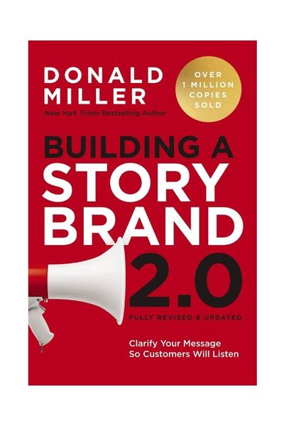
Building a StoryBrandDonald Miller · 2017Nobody buys from confusing brands. Cast the customer as Luke Skywalker, yourself as Yoda, and script the story8 min · 6 lessons · free summary Buy Back Your TimeDan Martell · 2023Don't hire to grow the business. Hire to buy back your time - then reinvest it in what only you can do.8 min · 6 lessons · free summary
Buy Back Your TimeDan Martell · 2023Don't hire to grow the business. Hire to buy back your time - then reinvest it in what only you can do.8 min · 6 lessons · free summary Cricket's Balance SheetUnknown · 2026The business of cricket decoded: media rights, player auctions, sponsorship math and the leverage traps, a man11 min · 10 lessons · free summary
Cricket's Balance SheetUnknown · 2026The business of cricket decoded: media rights, player auctions, sponsorship math and the leverage traps, a man11 min · 10 lessons · free summary Crossing the ChasmGeoffrey A. Moore · 1991Early adopters and mainstream buyers are different species. The gap between them is where startups die - cross8 min · 6 lessons · free summary
Crossing the ChasmGeoffrey A. Moore · 1991Early adopters and mainstream buyers are different species. The gap between them is where startups die - cross8 min · 6 lessons · free summary Elon MuskAshlee Vance · 2015Musk bet his entire PayPal fortune on rockets and electric cars - and was weeks from losing both. Physics-firs8 min · 6 lessons · free summaryGo Kiss the WorldSubroto Bagchi · 2008Subroto Bagchi's memoir-masterclass: how a boy from a small town, shaped by adversity and values, became a fou9 min · 7 lessons · free summary
Elon MuskAshlee Vance · 2015Musk bet his entire PayPal fortune on rockets and electric cars - and was weeks from losing both. Physics-firs8 min · 6 lessons · free summaryGo Kiss the WorldSubroto Bagchi · 2008Subroto Bagchi's memoir-masterclass: how a boy from a small town, shaped by adversity and values, became a fou9 min · 7 lessons · free summary Grinding It Out: The Making of McDonald'sRay Kroc · 1977Ray Kroc's autobiography: persistence as a business model, real estate as the hidden engine, and the price the9 min · 7 lessons · free summary
Grinding It Out: The Making of McDonald'sRay Kroc · 1977Ray Kroc's autobiography: persistence as a business model, real estate as the hidden engine, and the price the9 min · 7 lessons · free summary India Unincorporated: The Untold Story of India's Invisible EntrepreneursR. Vaidyanathan · 2014An economist's case that India's real economy is the unincorporated sector (self-employed, traders, tiny manuf10 min · 8 lessons · free summary
India Unincorporated: The Untold Story of India's Invisible EntrepreneursR. Vaidyanathan · 2014An economist's case that India's real economy is the unincorporated sector (self-employed, traders, tiny manuf10 min · 8 lessons · free summary Inspired: How to Create Tech Products Customers LoveMarty Cagan · 2017Cagan's manual for empowered product teams: product discovery before delivery, the four risks every feature ca11 min · 8 lessons · free summary
Inspired: How to Create Tech Products Customers LoveMarty Cagan · 2017Cagan's manual for empowered product teams: product discovery before delivery, the four risks every feature ca11 min · 8 lessons · free summary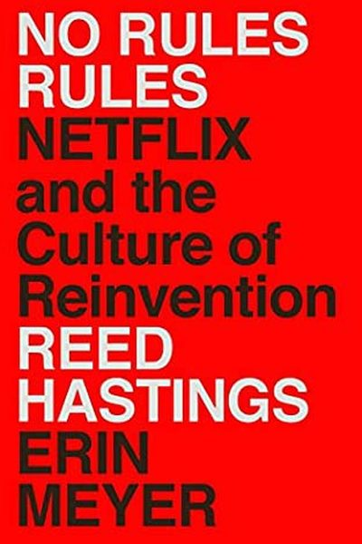
No Rules RulesReed Hastings & Erin Meyer · 2020Hire the best, tell them the truth, and let them make decisions - the Netflix culture machine, explained by it8 min · 6 lessons · free summary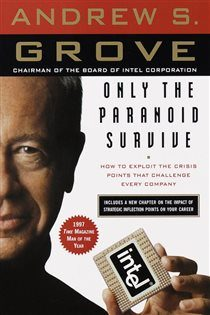
Only the Paranoid SurviveAndrew S. Grove · 1996Every business faces a moment when the rules change 10X. Spot it in the noise, act before it's obvious, or bec8 min · 6 lessons · free summaryPrinciplesRay Dalio · 2017Pain + Reflection = Progress. Turn every mistake into a written principle, embrace radical truth, and let the 8 min · 6 lessons · free summary Purple CowSeth Godin · 2003Nobody talks about brown cows. In a world drowning in options and starved of attention, remarkable isn't a bon8 min · 6 lessons · free summary
Purple CowSeth Godin · 2003Nobody talks about brown cows. In a world drowning in options and starved of attention, remarkable isn't a bon8 min · 6 lessons · free summary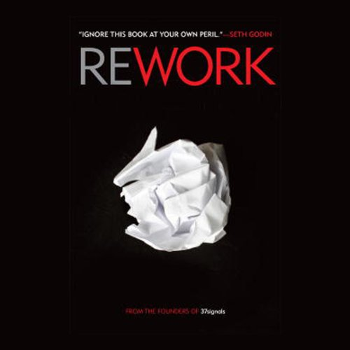
ReworkJason Fried & David Heinemeier Hansson · 2010Plans are guesses, meetings are toxic, workaholism is stupid, and you need less than you think. Just start mak8 min · 6 lessons · free summary Sam Walton: Made in AmericaSam Walton · 1992Retail isn't about being smartest - it's about being cheapest, fastest and friendliest, and never stopping.8 min · 6 lessons · free summary
Sam Walton: Made in AmericaSam Walton · 1992Retail isn't about being smartest - it's about being cheapest, fastest and friendliest, and never stopping.8 min · 6 lessons · free summary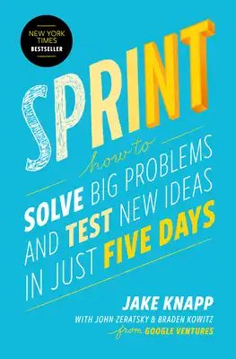
SprintJake Knapp · 2016Skip the endless debate and the expensive launch: prototype the idea Monday-to-Friday and watch five real cust8 min · 6 lessons · free summary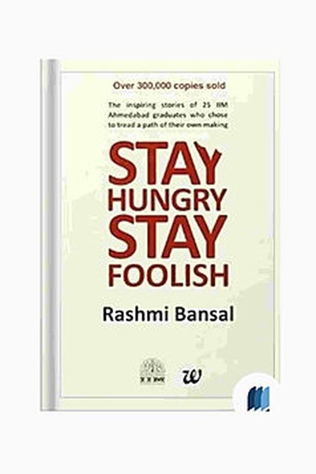
Stay Hungry Stay FoolishRashmi Bansal · 2008Rashmi Bansal profiles 25 IIM graduates who chose entrepreneurship - proof that hunger and execution beat pedi8 min · 6 lessons · free summary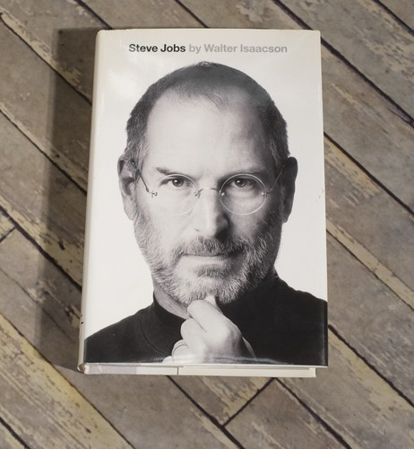
Steve JobsWalter Isaacson · 2011Jobs stood at the intersection of humanities and technology - and proved that taste, focus, and unreasonable s8 min · 6 lessons · free summary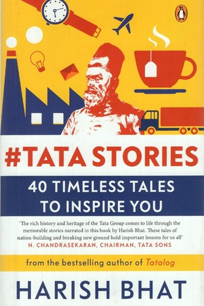
Tata Stories: 40 Timeless Tales to Inspire YouHarish Bhat · 2021Harish Bhat's forty stories from Tata's history - people before profit, nation before company, and how values 8 min · 6 lessons · free summaryThe Anarchy: The Relentless Rise of the East India CompanyWilliam Dalrymple · 2019Dalrymple's chronicle of how the East India Company conquered Mughal India (1557 to the 1757 Plassey betrayal 12 min · 7 lessons · free summary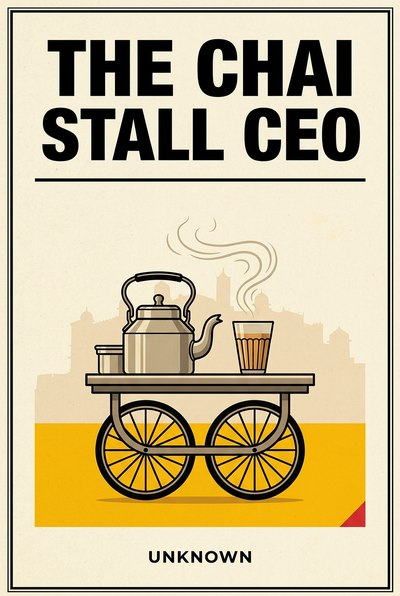
The Chai Stall CEOUnknown · 2026What the street-level Indian entrepreneur knows about costs, cash, loyalty and growth that boardrooms keep rel11 min · 10 lessons · free summary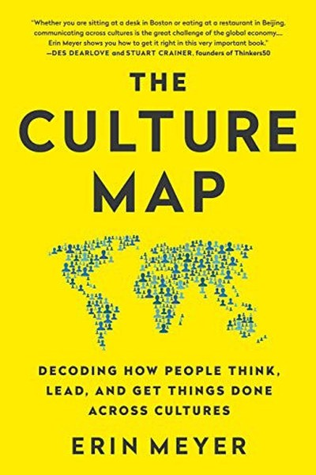
The Culture MapErin Meyer · 2014Erin Meyer's eight-scale framework for decoding cultural differences - so you can communicate, lead and negoti8 min · 6 lessons · free summary The Diary of a CEOSteven Bartlett · 2023Master the four pillars - self, story, philosophy, team - because the laws of great companies are the laws of 8 min · 6 lessons · free summary
The Diary of a CEOSteven Bartlett · 2023Master the four pillars - self, story, philosophy, team - because the laws of great companies are the laws of 8 min · 6 lessons · free summary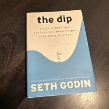
The DipSeth Godin · 2007Every worthwhile pursuit has a Dip - the long slog between starting and mastery. Quit dead ends fast; lean int8 min · 6 lessons · free summary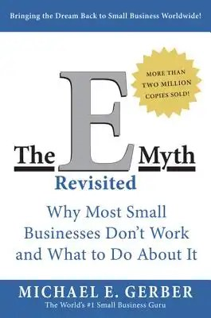
The E-Myth RevisitedMichael E. Gerber · 1995Great technicians build themselves jobs, not businesses. Build systems that run the business, so the business 8 min · 6 lessons · free summary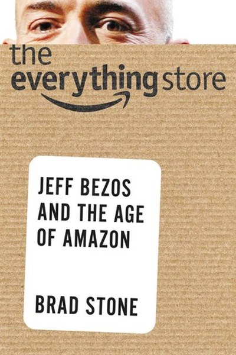
The Everything StoreBrad Stone · 2013Brad Stone's definitive biography of Amazon and Jeff Bezos: customer obsession, long-term thinking and relentl9 min · 7 lessons · free summary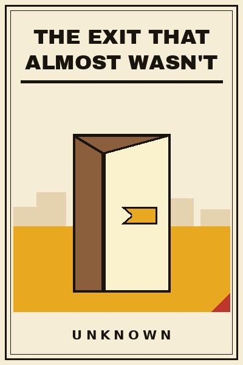
The Exit That Almost Wasn'tUnknown · 2026Everyone plans the building. Almost nobody plans the leaving: and the difference between a great exit and a gu10 min · 10 lessons · free summary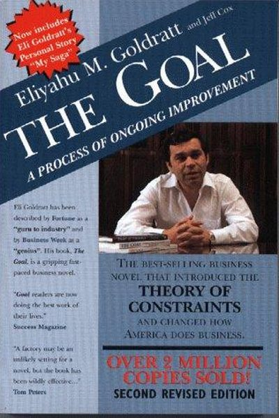
The GoalEliyahu M. Goldratt · 1984The goal of a business is to make money. Find the bottleneck, exploit it, and the whole system flows.11 min · 8 lessons · free summary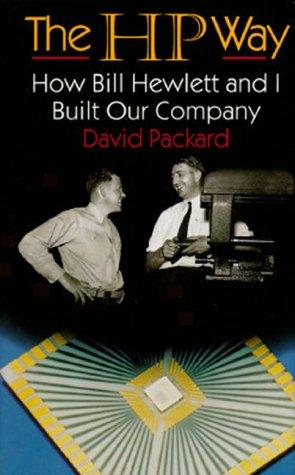
The HP Way: How Bill Hewlett and I Built Our CompanyDavid Packard · 1995David Packard's account of HP's founding and culture: trust-based management (open labs, no time clocks, manag10 min · 8 lessons · free summary The Hard Thing About Hard ThingsBen Horowitz · 2014The hard thing isn't setting big goals. It's laying people off, making calls with no good options, and not qui11 min · 8 lessons · free summary
The Hard Thing About Hard ThingsBen Horowitz · 2014The hard thing isn't setting big goals. It's laying people off, making calls with no good options, and not qui11 min · 8 lessons · free summary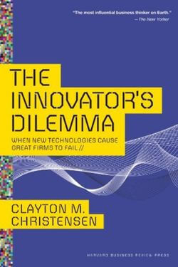
The Innovator's DilemmaClayton M. Christensen · 1997Great companies fail not despite good management but BECAUSE of it: listening to best customers blinds them to8 min · 6 lessons · free summary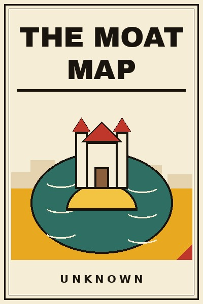
The Moat MapUnknown · 2026Revenue is rented. Moats are owned. This book maps the real ones: brand, switching cost, network, cost, regula10 min · 10 lessons · free summary The Personal MBAJosh Kaufman · 2010Business is one skill: creating and capturing value. Master the 10 core concepts and you out-think most MBAs.8 min · 6 lessons · free summary
The Personal MBAJosh Kaufman · 2010Business is one skill: creating and capturing value. Master the 10 core concepts and you out-think most MBAs.8 min · 6 lessons · free summary The Price Is the ProductUnknown · 2026Founders spend months on the product and one afternoon on its price: then wonder why the margin died. Pricing 10 min · 10 lessons · free summary
The Price Is the ProductUnknown · 2026Founders spend months on the product and one afternoon on its price: then wonder why the margin died. Pricing 10 min · 10 lessons · free summary The Snowball: Warren Buffett and the Business of LifeAlice Schroeder · 2008Life is a snowball: find wet snow and a long hill. Then protect your reputation - it's all you have.8 min · 6 lessons · free summaryThe TCS Story... and BeyondS. Ramadorai · 2011TCS built Indian IT services through patience, trust and brutal delivery discipline, proving a services compan13 min · 8 lessons · free summaryThe White TigerAravind Adiga · 2008Aravind Adiga's Booker-winning tale of a servant who escapes to become an entrepreneur - an unflinching look a8 min · 6 lessons · free summary
The Snowball: Warren Buffett and the Business of LifeAlice Schroeder · 2008Life is a snowball: find wet snow and a long hill. Then protect your reputation - it's all you have.8 min · 6 lessons · free summaryThe TCS Story... and BeyondS. Ramadorai · 2011TCS built Indian IT services through patience, trust and brutal delivery discipline, proving a services compan13 min · 8 lessons · free summaryThe White TigerAravind Adiga · 2008Aravind Adiga's Booker-winning tale of a servant who escapes to become an entrepreneur - an unflinching look a8 min · 6 lessons · free summary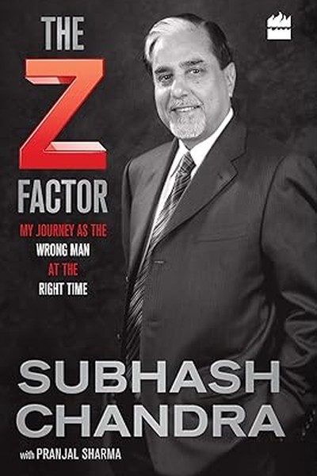
The Z FactorSubhash Chandra · 2016Subhash Chandra's memoir of building India's first private TV empire - audacious bets, an $11 billion crisis, 9 min · 7 lessons · free summary Working BackwardsColin Bryar and Bill Carr · 2019Amazon's operating system explained by two insiders: customer obsession as the north star, working backwards f11 min · 10 lessons · free summary
Working BackwardsColin Bryar and Bill Carr · 2019Amazon's operating system explained by two insiders: customer obsession as the north star, working backwards f11 min · 10 lessons · free summary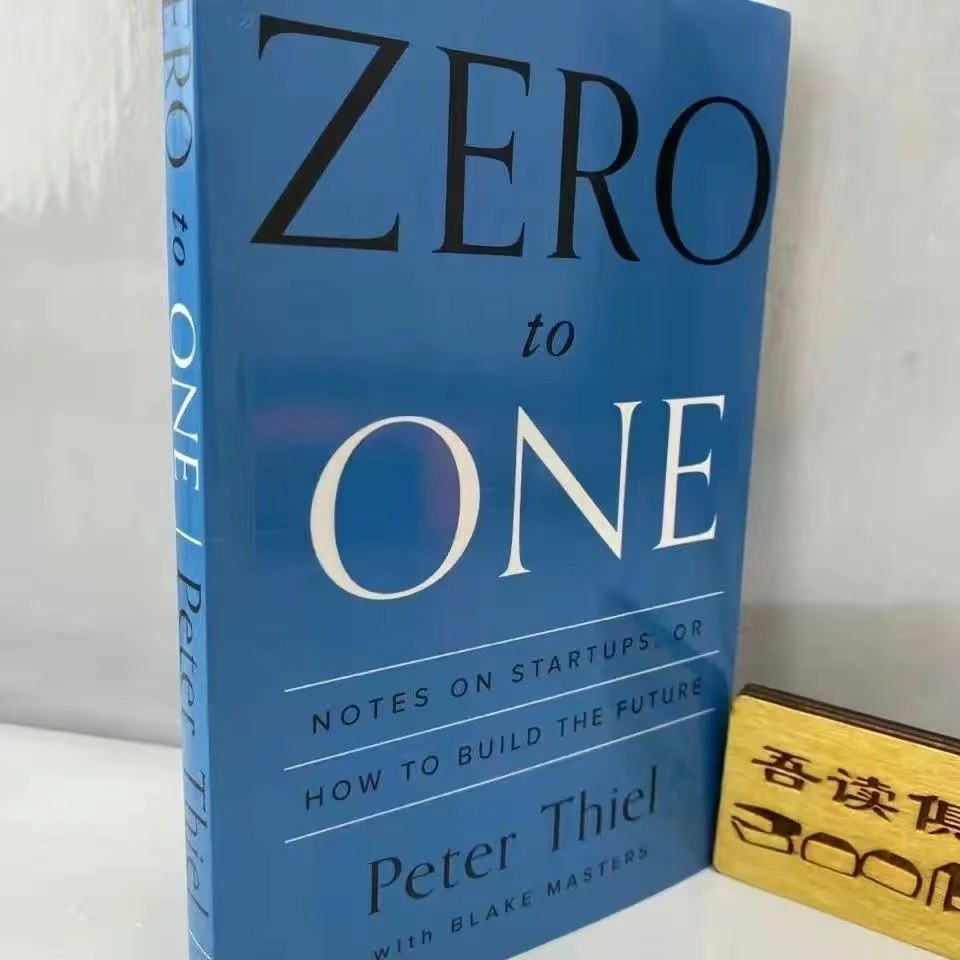
Zero to OnePeter Thiel · 2014Doing what we already know takes the world from 1 to n. Creating something new takes it from 0 to 1.11 min · 8 lessons · free summary $100M LeadsAlex Hormozi · 2023You don't have a sales problem, you have a leads problem. Master the Core Four and give away the good stuff un8 min · 6 lessons · free summary
$100M LeadsAlex Hormozi · 2023You don't have a sales problem, you have a leads problem. Master the Core Four and give away the good stuff un8 min · 6 lessons · free summary $100M OffersAlex Hormozi · 2021Don't compete on price. Build an offer so valuable and so de-risked that comparison becomes impossible.8 min · 6 lessons · free summary
$100M OffersAlex Hormozi · 2021Don't compete on price. Build an offer so valuable and so de-risked that comparison becomes impossible.8 min · 6 lessons · free summary Ambani & SonsHamish McDonald · 2010The definitive business history of the Ambani family, showing how Dhirubhai built Reliance by mastering capita12 min · 7 lessons · free summary
Ambani & SonsHamish McDonald · 2010The definitive business history of the Ambani family, showing how Dhirubhai built Reliance by mastering capita12 min · 7 lessons · free summary Black Box ThinkingMatthew Syed · 2015Aviation treats every failure as data and got massively safer; healthcare and other blame cultures bury errors10 min · 10 lessons · free summary
Black Box ThinkingMatthew Syed · 2015Aviation treats every failure as data and got massively safer; healthcare and other blame cultures bury errors10 min · 10 lessons · free summary BlitzscalingReid Hoffman & Chris Yeh · 2018Sometimes speed is the strategy: grow faster than feels comfortable, and let the problems of scale replace the8 min · 6 lessons · free summary
BlitzscalingReid Hoffman & Chris Yeh · 2018Sometimes speed is the strategy: grow faster than feels comfortable, and let the problems of scale replace the8 min · 6 lessons · free summary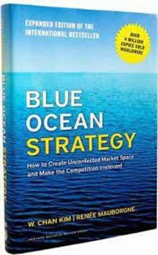
Blue Ocean StrategyW. Chan Kim & Renée Mauborgne · 2005Stop fighting sharks in bloody red oceans. Create a blue one - where the rules are yours and the competition d8 min · 6 lessons · free summary Bottle of Lies: The Inside Story of the Generic Drug BoomKatherine Eban · 2019Investigative journalism on how Ranbaxy and other generic drugmakers gamed the FDA's inspection regime, the wh13 min · 8 lessons · free summary
Bottle of Lies: The Inside Story of the Generic Drug BoomKatherine Eban · 2019Investigative journalism on how Ranbaxy and other generic drugmakers gamed the FDA's inspection regime, the wh13 min · 8 lessons · free summary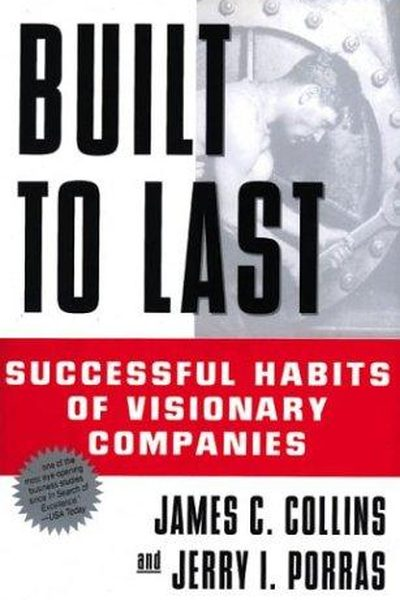
Built to LastJim Collins & Jerry Porras · 1994Visionary companies are built on core ideology + BHAGs + cult-like culture - and clock-building, not time-tell8 min · 6 lessons · free summary Desi Disruptors: Timeless Lessons from Iconic Indian BrandsVispy Doctor and Vikrant Pande · 2020Every iconic Indian brand began with an unspoken consumer truth that somebody finally worked on. This book nam12 min · 8 lessons · free summary
Desi Disruptors: Timeless Lessons from Iconic Indian BrandsVispy Doctor and Vikrant Pande · 2020Every iconic Indian brand began with an unspoken consumer truth that somebody finally worked on. This book nam12 min · 8 lessons · free summary For the Love of India: The Life and Times of Jamsetji TataR. M. Lala · 2004The biography of Jamsetji Tata, the founder who planned a nation's industry a century ahead, and whose success11 min · 8 lessons · free summary
For the Love of India: The Life and Times of Jamsetji TataR. M. Lala · 2004The biography of Jamsetji Tata, the founder who planned a nation's industry a century ahead, and whose success11 min · 8 lessons · free summary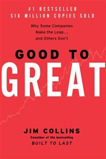
Good to GreatJim Collins · 2001Good is the enemy of great. The leap comes from humble fanatic leaders, the right people first, brutal facts, 8 min · 6 lessons · free summary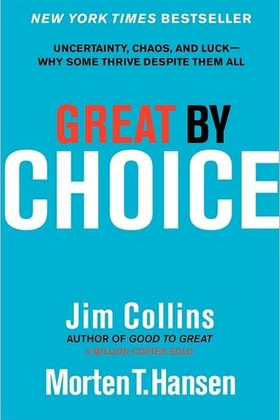
Great by ChoiceJim Collins & Morten Hansen · 2011Great companies don't predict the future - they prepare for it: consistent marches, cheap bullets, and fanatic8 min · 6 lessons · free summary High Output ManagementAndy Grove · 1983A manager's output = the output of their team. Leverage, meetings, and performance reviews done right - the Gr8 min · 6 lessons · free summary
High Output ManagementAndy Grove · 1983A manager's output = the output of their team. Leverage, meetings, and performance reviews done right - the Gr8 min · 6 lessons · free summary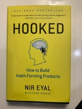
HookedNir Eyal · 2014Trigger → Action → Variable Reward → Investment. Run the loop enough times and your product becomes the user's8 min · 6 lessons · free summary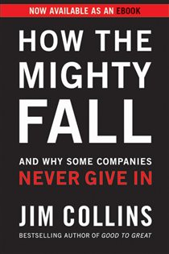
How the Mighty FallJim Collins · 2009Decline is a staged disease: hubris → overreach → denial → grasping → death. It's self-inflicted, detectable, 8 min · 6 lessons · free summary Imagining IndiaNandan Nilekani · 2008Nandan Nilekani argues that ideas, not resources, built modern India - from state control to a globalized tech8 min · 6 lessons · free summary
Imagining IndiaNandan Nilekani · 2008Nandan Nilekani argues that ideas, not resources, built modern India - from state control to a globalized tech8 min · 6 lessons · free summary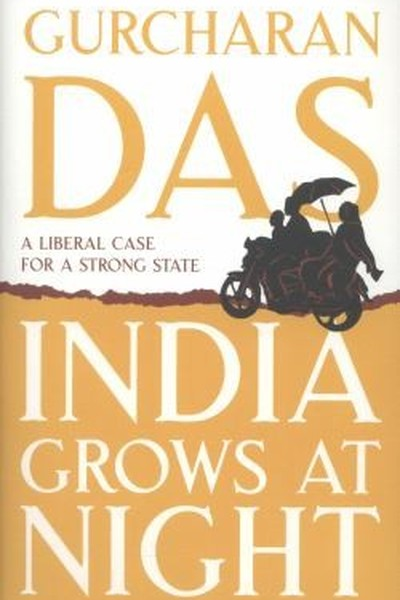
India Grows at NightGurcharan Das · 2012Gurcharan Das argues India grows at night - in the informal economy, despite the state - and makes the case fo8 min · 6 lessons · free summaryIndia PositiveChetan Bhagat · 2022Chetan Bhagat argues that India's problems are solvable and its potential enormous - if citizens engage, youth8 min · 6 lessons · free summaryIndia UnboundGurcharan Das · 2000Gurcharan Das tells how India went from the License Raj to liberalization - a case for why economic freedom is8 min · 6 lessons · free summary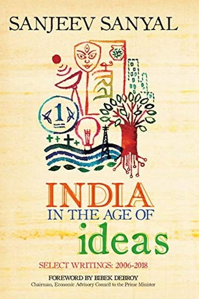
India in the Age of IdeasSanjeev Sanyal · 2012Sanjeev Sanyal argues that India's fortunes have always followed its ideas and institutions - and that underst8 min · 6 lessons · free summary India's Money HeistSucheta Dalal & Debashish Basu · 2019India's most famous financial journalists dissect how Anil Ambani's empire borrowed, expanded and imploded - a8 min · 6 lessons · free summary
India's Money HeistSucheta Dalal & Debashish Basu · 2019India's most famous financial journalists dissect how Anil Ambani's empire borrowed, expanded and imploded - a8 min · 6 lessons · free summary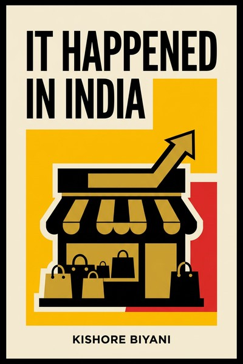
It Happened in IndiaKishore Biyani · 2007Kishore Biyani's account of building Future Group (Pantaloons, Big Bazaar, Central) by designing retail around11 min · 8 lessons · free summary Leaders Eat LastSimon Sinek · 2014In the Marines, officers eat after their men - and the men would die for them. Leadership is not rank; it's ch8 min · 6 lessons · free summaryLosing My VirginityRichard Branson · 1998Richard Branson's memoir of Student magazine, Virgin Records, the airline war against British Airways and the 12 min · 8 lessons · free summary
Leaders Eat LastSimon Sinek · 2014In the Marines, officers eat after their men - and the men would die for them. Leadership is not rank; it's ch8 min · 6 lessons · free summaryLosing My VirginityRichard Branson · 1998Richard Branson's memoir of Student magazine, Virgin Records, the airline war against British Airways and the 12 min · 8 lessons · free summary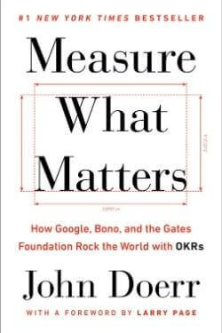
Measure What MattersJohn Doerr · 2018Ideas are easy; execution is everything. OKRs - Objectives and Key Results - are how the best organizations fo8 min · 6 lessons · free summary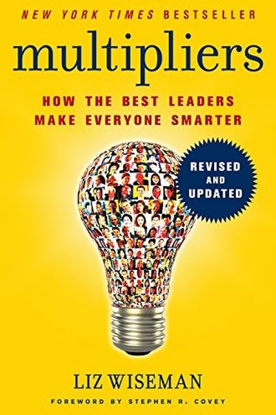
MultipliersLiz Wiseman · 2010Multipliers amplify the genius around them; Diminishers shut it down. One leader gets 2x from a team; the othe8 min · 6 lessons · free summary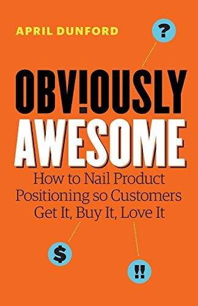
Obviously Awesome: How to Get Product Positioning RightApril Dunford · 2019April Dunford's practical positioning method: choose your competitive alternatives, unique attributes, value, 9 min · 8 lessons · free summaryOnward: How Starbucks Fought for Its Life without Losing Its SoulHoward Schultz · 2011Howard Schultz's account of returning to Starbucks in 2008: diagnosing brand drift, closing stores for espress11 min · 8 lessons · free summary Radical CandorKim Scott · 2017Care personally + challenge directly. Anything less is ruinous empathy, obnoxious aggression, or manipulative 8 min · 6 lessons · free summary
Radical CandorKim Scott · 2017Care personally + challenge directly. Anything less is ruinous empathy, obnoxious aggression, or manipulative 8 min · 6 lessons · free summary Shoe DogPhil Knight · 2016Nike was one cash-flow crisis from death for fifteen straight years. The Crazy Idea survived on nerve, misfits8 min · 6 lessons · free summary
Shoe DogPhil Knight · 2016Nike was one cash-flow crisis from death for fifteen straight years. The Crazy Idea survived on nerve, misfits8 min · 6 lessons · free summary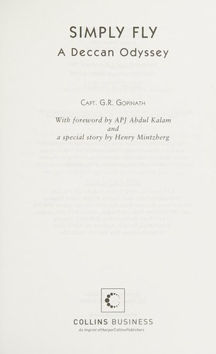
Simply Fly: A Deccan OdysseyG. R. Gopinath · 2011Captain Gopinath built Air Deccan from nothing to prove the poorest Indian could fly, and paid for the revolut13 min · 8 lessons · free summary Start With WhySimon Sinek · 2009Every organization knows WHAT it does, some know HOW - almost none can articulate WHY. The WHY is where loyalt8 min · 6 lessons · free summary
Start With WhySimon Sinek · 2009Every organization knows WHAT it does, some know HOW - almost none can articulate WHY. The WHY is where loyalt8 min · 6 lessons · free summary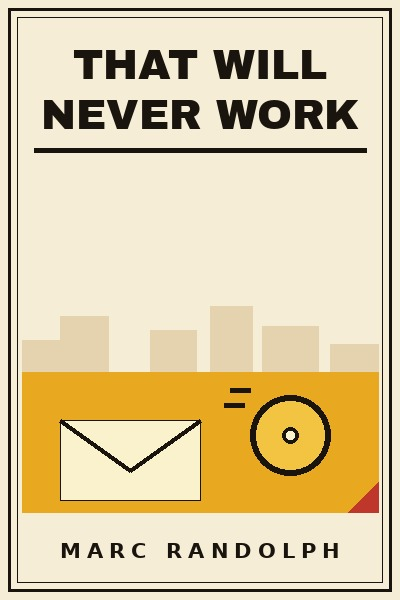
That Will Never WorkMarc Randolph · 2019Netflix began as a DVD-by-mail gamble everyone dismissed: no idea survives contact with reality intact, so tes10 min · 10 lessons · free summary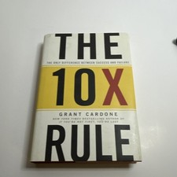
The 10X RuleGrant Cardone · 2011Wrong targets, not wrong ambition, kill most people: aim 10X higher, expect 10X obstacles, and act at levels o8 min · 6 lessons · free summary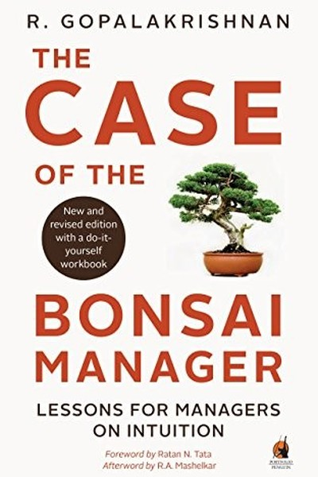
The Case of the Bonsai ManagerR. Gopalakrishnan · 2012R. Gopalakrishnan diagnoses the 'bonsai syndrome' - how Indian workplaces prune managers small - and prescribe8 min · 6 lessons · free summary The Coaching HabitMichael Bungay Stanier · 2016Stop giving answers. Ask seven questions - and watch people solve their own problems.9 min · 7 lessons · free summaryThe Cold Start Problem: How to Start and Scale Network EffectsAndrew Chen · 2021Andrew Chen's manual for network-effect products: solving the cold start with atomic networks, riding the hype11 min · 8 lessons · free summary
The Coaching HabitMichael Bungay Stanier · 2016Stop giving answers. Ask seven questions - and watch people solve their own problems.9 min · 7 lessons · free summaryThe Cold Start Problem: How to Start and Scale Network EffectsAndrew Chen · 2021Andrew Chen's manual for network-effect products: solving the cold start with atomic networks, riding the hype11 min · 8 lessons · free summary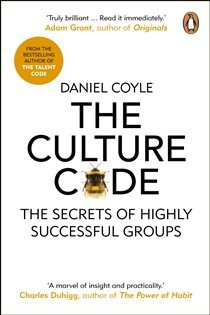
The Culture CodeDaniel Coyle · 2018Great cultures aren't built on talent or perks. They run on three signals: you're safe here, we share weakness8 min · 6 lessons · free summaryThe Five Dysfunctions of a TeamPatrick Lencioni · 2002Every team failure traces to one of five dysfunctions - and they cascade. Fix trust first; everything else fol8 min · 6 lessons · free summary The Franchise LieUnknown · 2026Franchising is sold as buying a working machine. Sometimes it is. Often you are the machine, and the machine h10 min · 10 lessons · free summary
The Franchise LieUnknown · 2026Franchising is sold as buying a working machine. Sometimes it is. Often you are the machine, and the machine h10 min · 10 lessons · free summary The Leader Who Had No TitleRobin Sharma · 2010You can lead without a title: by expertise, example and serving others' success every day.7 min · 9 lessons · free summary
The Leader Who Had No TitleRobin Sharma · 2010You can lead without a title: by expertise, example and serving others' success every day.7 min · 9 lessons · free summary The New One Minute ManagerKen Blanchard & Spencer Johnson · 2015Catch people doing something right. Management is that simple - and that rare.8 min · 6 lessons · free summary
The New One Minute ManagerKen Blanchard & Spencer Johnson · 2015Catch people doing something right. Management is that simple - and that rare.8 min · 6 lessons · free summary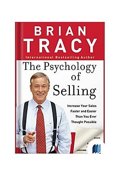
The Psychology of SellingBrian Tracy · 2004Selling is 80% psychology: theirs (they buy feelings, then justify) and yours (self-concept sets your income).8 min · 6 lessons · free summary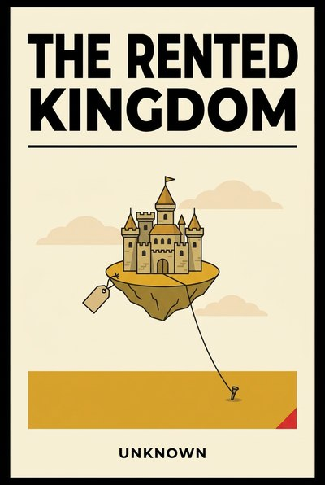
The Rented KingdomUnknown · 2026Platform dependence decoded: reach, algorithms, terms of service and fee stacks, and the discipline of buildin12 min · 11 lessons · free summaryThe Ride of a LifetimeBob Iger · 2019Leadership is the daily choice to be optimistic, decisive and focused on the future instead of protecting the 8 min · 6 lessons · free summary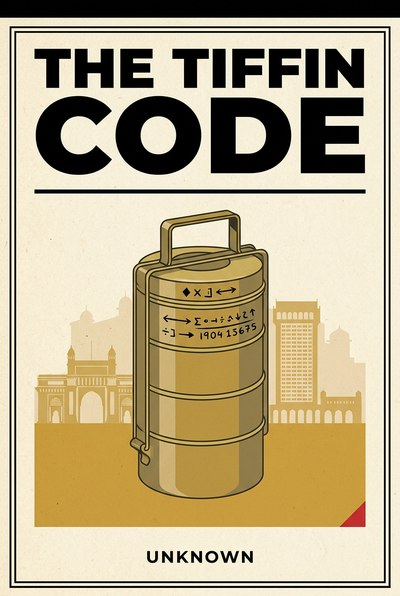
The Tiffin CodeUnknown · 2026The Mumbai dabbawala network decoded as management doctrine: simple codes, frontline ownership and an error ra11 min · 10 lessons · free summaryThe Toyota WayJeffrey Liker · 2004Liker's distillation of the Toyota Production System: 14 principles across philosophy, process, people and pro12 min · 8 lessons · free summaryEvery summary free. Mark lessons as read, listen in your language, share quote cards.